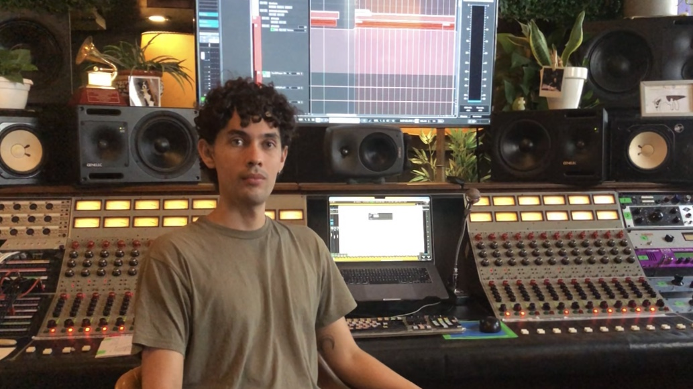

Audio Engineer
Sol de Sants
Assistant
Sol de Sants is a recording studio in Barcelona led by Latin Grammy winner Alberto Perez. Agustin featured with indie and renowned artists. Click for more info.

New Amsterdam Jazz Live Session
Assistant Recording Engineer
Part of the audio team of the Barcelona Music Sessions production organized by New Amsterdam Jazz at Sol de
Sants Studios in Barcelona in November 2024. The series consisted of recording 15 bands, totaling 75 musicians, in
8 days. Click for more info.
Kev Diem - Live Session
Co-recording Engineer
Live Session en Sol de Sants Studios, Barcelona, Spain. Recording Engineer
Sesiones K-Pick Up
Recording | Mixing Engineer
Live sessions from a Volkswagen Van produced by Doble Luna Records
Juan David Maya - Incio
Recording Engineer
Inicio is the first studio album by the Ecuadorian musician Juan David Maya. Drum recording engineer at:
Angela,
Verdad,
Siete.
Bernarda - Otra Mañana
Assistant Recording Engineer (SdS)
Otras Mañana is a single by the Catalan artist Bernarda. Responsable for drum recording and Protools operator.
Film and Audivisual
Ventanas Abiertas Film
Composition
Ventanas Abiertas is a short film written and directed by Jos Mauro Witteveen. All the music, diagetic and non-diagetic is composed and mixed by Agustin. The film was officially selected and projected in the student competition of the Netherlands Film Festival 2022.
La Ruta Film
Composition
La Ruta is a film written and directed by Nico Strike. Some of the music, diegetic and non-diagetic is composed and mixed by Agustin.
De rok van mijn oma
Composition | Soundesign
Rock van mijin Oma is a short documentary written and directed by Jos Mauro Witteveen. All the music is composed by Agustin. Also the sound design and mixing in stereo and 5.1 was made by Agustin.
Vita | Advertising Spot
Music Production/ Audio Engineer
An advertising spot for the milk brand Vita. Composition and arrragment by Jordy Núñez. Production, secuence and mix Agustin Echeverria
Más Info
Into the Abyss Film
Composition
Into the Abyss is a short film written and directed by Jacobo Sanmartin. All the musc made by Agustin.
Más Info
Music Production and Composition
elconx
Music Production | Main artist
Is an ambient electronic music project, combined with indie, rock and jazz. "Suspiro" the newest release. Composition, mixing and principal artist. For furder information you can see the EPK here.

Más Info
Suspira
Composition
Composition for Cello and Electronic. Based in live mapipulation of sound and programed with MAX/MSP
Más Info